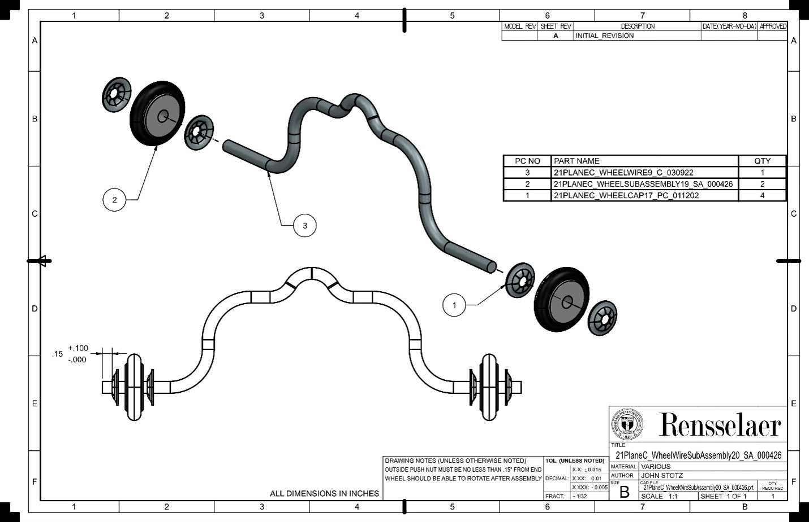

Project Overview: Assembly of the Wheel Wires
Objective:
To develop a streamlined assembly process for fastening a set of wheels onto 300 wheel wires, ensuring reliability and efficiency.
Collaboration:
Worked closely with a peer to advance the design and assembly process, collaborating to optimize both the efficiency and effectiveness of our approach.
Assembly Process:
1. Organization:
- Components necessary for the assembly—wheels, push nuts, and wheel wires—were systematically organized into designated bins to facilitate smooth handling throughout the process.
2. Die Design:
- To accommodate the bent wheel wire, an assembly die was designed. In addition, an alignment block was engineered to aid the operator in the assembly process.
- Both components were fabricated from ABS plastic using a Stratasys 3D printer.
3. Assembly Process:
- A drill press chuck was utilized for its unique design, which, when calibrated to the diameter of the wheel wire, allowed the wire to pass through its center-hole while the chuck pushed the wheel and push nuts into place.
- A table vise secured the assembly die during operation.
- The assembly sequence involved: pressing a push nut onto the wheel wire, sliding a wheel onto the wire, and then using the alignment block to ensure proper fit, before finally securing the assembly with a second push nut.
4. Quality Control:
- A caliper was used to verify sufficient clearance between the outer push nut and the end of the wire, preventing accidental detachments during use.
- The assembled wheel wire was tested on a surface to ensure smooth rotation, free from friction between the wheel and push nuts.
5. Challenges and Solutions:
- The complexity of the assembly geometry posed challenges in balancing Design for Manufacturing (DFM) considerations with the importance of an expeditious assembly process. The use of 3D-printed assembly dies mitigated some of these issues.
- The initial alignment block, made from plastic, fractured during an assembly. In the second iteration, the arms of the alignment block were made wider to distribute the load and improve durability.
Results:
Ultimately, We successfully completed 330 wheel wire assemblies, producing an additional 30 units to accommodate a potential scrap rate of up to 10%.
Documentation:
Developed comprehensive digital work instructions in VKS, detailing each step of the assembly process. This documentation enabled peers unfamiliar with the method to achieve consistent results.
Manufacturing Techniques:
Utilized a 3D printer to fabricate the assembly blocks.
Future Improvements:
While the project was successful, several areas for improvement were identified:
- Implementing Design for Manufacturing principles to create a simpler alignment block design suitable to make with subtractive manufacturing methods, such as water jet cutting or milling.
- Transitioning to metal dies to improve durability and longevity of the tools used for assembly.
Contact Me
Email (preferred contact method): michael.aksen@gmail.com
Phone #: 201-982-1776